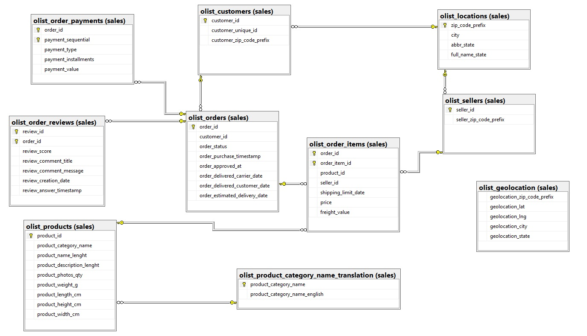

Brazilian E-commerce by Olist
(Microsoft SQL Server)
This dataset was generously provided by Olist, the largest department store in Brazilian marketplaces. Olist connects small businesses from all over Brazil to channels without hassle and with a single contract. Those merchants are able to sell their products through the Olist Store and ship them directly to the customers using Olist logistics partners.
Ask
Understanding customer reviews is crucial for a business's success. Analyzing these reviews helps in gaining a deeper understanding of customer preferences, and the resulting insights can be utilized to enhance customer service and the overall experience.
Business Task
Analyze historical data to determine how to prevent client dissatisfaction.
Prepare
Dataset source:The dataset has information of 100k orders from 2016 to 2018 made at multiple marketplaces in Brazil. Its features allows viewing an order from multiple dimensions: from order status, price, payment and freight performance to customer location, product attributes and finally reviews written by customers. We also released a geolocation dataset that relates Brazilian zip codes to lat/lng coordinates. Link to Data Source
Size of data:
99 441 unique orders, 3 095 unique sellers, 32 951 products
Organization data
olist_customers_dataset.csv
olist_geolocation_dataset.csv
olist_order_items_dataset.csv
olist_order_payments_dataset.csv
olist_order_reviews_dataset.csv
olist_orders_dataset.csv
olist_products_dataset.csv
olist_sellers_dataset.csv
product_category_name_translation.csv
Metadata:
olist_orders
- order_id Primary Key nvarchar(50) Not Null
- customer_id Foreign Key table nvarchar(50) Not Null
- order_status nvarchar(50) enum{approved, delivered, created, invoiced, processing, unavailable, canceled, shipped} Not Null
- order_purchase_timestamp datetime2 Not Null
- order_approved_at datetime2 Null
- order_delivered_carrier_date datetime2 Null
- order_delivered_customer_date datetime2 Null
- order_estimated_delivery_date datetime2 Not Null
- review_id Primary Key nvarchar(50) Not Null
- order_id Primary Key nvarchar(50) Not Null Foreign Key
- review_score int enum{1, 2, 3, 4, 5} Not Null
- review_comment_title nvarchar(50) Null
- review_comment_message nvarchar(250) Null
- review_creation_date datetime2 Not Null
- review_answer_timestamp datetime2 Not Null
- order_id Primary Key nvarchar(50) Not Null Foreign Key
- order_item_id Primary Key int Not Null
- product_id Foreign Key nvarchar(50) Not Null
- seller_id Foreign Key nvarchar(50) Not Null
- shipping_limit_date datetime2 Not Null
- price float Not Null
- freight_value float Not Null
- order_id Primary Key nvarchar(50) Not Null Foreign Key
- payment_sequential Primary Key int Not Null
- payment_typenvarchar(50) enum{credit_card, not_defined, debit_card, boleto, voucher} Not Null
- payment_installments tinyint Not Null
- payment_value float Not Null
- customer_id Primary Key nvarchar(50) Not Null
- customer_unique_id Primary Key int Not Null
- customer_zip_code_prefixint Not Null
- customer_city nvarchar(50) Not Null
- customer_state nvarchar(50) Not Null
- product_id Primary Key nvarchar(50) Not Null
- product_category_name nvarchar(50) Null
- product_name_lenghtint Null
- product_description_lenght int Null
- product_photos_qty int Null
- product_weight_g int Null
- product_length_cm int Null
- product_height_cm int Null
- product_width_cm int Null
- seller_id Primary Key nvarchar(50) Not Null
- seller_zip_code_prefixint Not Null
- seller_city nvarchar(50) Not Null
- seller_state nvarchar(50) Not Null
- geolocation_zip_code_prefix int Not Null
- geolocation_latfloat Null
- geolocation_lng float Null
- geolocation_city nvarchar(50) Not Null
- geolocation_state nvarchar(50) Not Null
- product_category_name nvarchar(50) Not Null
- product_category_name_englishnvarchar(50) Not Null
The data is divided in multiple datasets for better understanding and organization.

Process
- Downloaded Brazilian E-Commerce Public Dataset by OlistLink to Data Source
- Created "csv" subfolder for the .csv file and uploaded into Microsoft SQL Server
Database Brazilian_E_Commerce > Tasks > Import Flat File... - Used tools for processing and vizualization:
Microsoft SQL Server and Tableau. - Clean Data:
After uploading the data, the first step involves adding primary and foreign keys to the tables Link to Constraints.sql.
The process of cleaning data is detailed and explained in the Link to CleaningProcess.sql file.
An Entity-Relationship (ER) diagram is a visual representation of the relationships among entities in a database:
Analyze
- How satisfied are customers with their orders?
- What is the number of unique orders per review score?
- What is the order satisfaction rate for on-time and late deliveries?
- What is the average/max/min/median duration of delivery and estimated duration of delivery for an order by review satisfaction?
- What are the total number of reviews, the count of negative reviews, and the percentage of negative reviews for each month and year?
- What is the satisfaction rate categorized by order status?
- What is the satisfaction rate categorized by top 10 sellers?
- What is the satisfaction rate categorized by top 10 sold product categories?